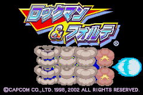
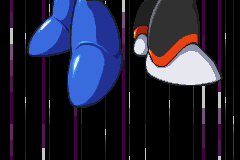

Rockman & Forte (Japan) (Virtual Console)
EEPROM 64K Save Format Mapped (Family Spec) gbakit Built-In 🎮 Button Cheat 💾 MultiBoot
Cartridge Identity
- Game Code
AFCJ(FamilyAFC)- Header Title
ROCK&FORTE- Maker / Revision
08/ rev0- ROM Size
- 8.0 MiB (8,388,608 B)
- Save Media
EEPROM 64K- SHA-256
539e79a8f15474070095fb5c74191fc4dc5d3000d60b4a2230cae3e803fd7b0a- Engine / SDK Group
comm-062(2 families)
Verified Button-Combo Cheat
Zero-patch retail controller cheat (Wave 3): 4-way counterfactually verified in headless
libmgba. See all verified titles in the Button-Combo Cheats Catalog.
- Effect
- Hidden Multi-Cheat Table Sequence Unlock (ROM table 0x084ef198)
- Button Sequence
B, START, DOWN, A, SELECT, START, DOWN, B- Verification Verdict
- Visual + RAM Unique Reaction
- Target RAM Address
0x03007E9D- ROM Table Address
0x084ef198- Timing Protocol
boot=360f,hold=6f,release=6f,settle=60f- Activation Indicator
- Headless libmgba 4-way counterfactual verified: unique 240x160 framebuffer and RAM/VRAM state transition distinct from control, wrong, and reversed inputs
gbakit cheat verify AFCJ

Link Cable & Multiplayer Communications
This title contains detected communication capabilities: 💾 MultiBoot.
Detailed protocol specifications, SIO registers, Joybus commands, and MultiBoot sequences are documented in the Link & Multiplayer Reference.
- Single-Cart MultiBoot
- Single-Cartridge MultiBoot (Download Play) client/server handler · Thumb SWI 0x25 (
0xDF25):0x15f914,0x199ccc,0x19e610,0x1a3086
Battery Save Format Specification (Family Shared)
This release shares its save architecture with canonical family reference Rockman & Forte (Japan) (Family
AFC).
Open Family Save Format Spec (AFCJ)Download save-format.json
- Canonical Specification
AFCJ· 4 mapped fields · 0 verified checksum(s) · Confidence: HIGH- gbakit Built-In Support
- Built-in (AFCJ)
gbakit save verify AFCJ save.sav
gbakit save decode AFCJ save.sav
gbakit save fix AFCJ damaged.sav -o repaired.savObserved Battery Save Layout
- Fill Byte & Active Size
0xFFfill · 2,048–2,048 / 8,192 B active (entropy 0.06 bits/B)- Active Offset Ranges
0x0–0x7FF(1 total)- ASCII Magic / Headers
0LOFKCOR- Observed Variable Regions
- 0 bytes across 0 spans: None
- Candidate Checksum/Counter Spans
- None
Text, Fonts & Scene Data
- Primary Text Encoding
- Compressed / custom-encoded text (
7ASCII strings) - Font & VWF Indicators
- VWF Width Table 1bpp Font · BIOS SWIs: BitUnPack
0x10:8· LZ770x11/12:24· Huffman0x13:8· RLE0x14/15:20 - Scene & Packaging
63ROM pointer tables (≥32 entries,4≥200) ·0relativeu32TOCs ·223OAM metasprite hits
Hardware MMIO Subsystems
ppu_display0x805010c,0x8050470,0x8050cec,0x805111c,0x805a1dc,0x805a230,0x805a2c0
Regional Variants & Revisions (Family AFC)
- Rockman & Forte (Japan) (
AFCJ, 8 MiB)